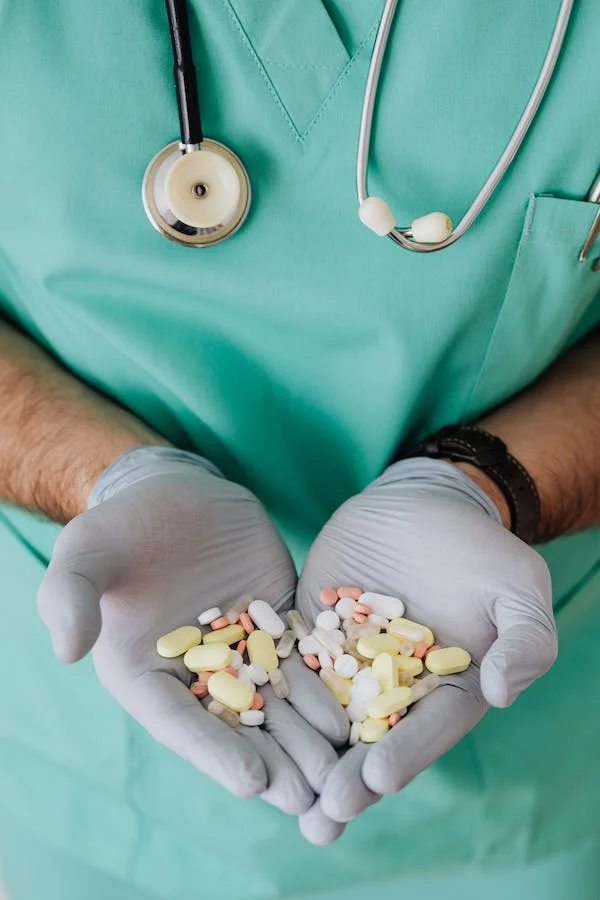

ABOUT US
Saves Travel and Money
Multispeciality hospitals are a boon for patients who have to travel to different places for their treatment needs. They provide diagnostics, treatment, medical stores, etc. in a single place. This eliminates the hassle of travelling across different places and saves time as well as money.Simultaneous Treatment For Multiple Problems
With changing lifestyles, having one or more health problems is becoming very common. This is where multispeciality hospitals can prove beneficial. They have an in-house team of doctors, surgeons and other specialists. They also have the necessary equipment to provide treatment for a wide range of diseases. Patients can get treatment for multiple diseases simultaneously at these hospitals.
Get treatment at the best Multispeciality Hospital in Boisar!
Now that you know that choosing a Multispeciality hospital can have numerous benefits. You can come to Adhikari Lifeline Hospital. It is a multispeciality hospital in Boisar for all your medical needs. Our specialist doctors have the knowledge and expertise to diagnose and treat a number of conditions.
We provide a number of facilities which includes an emergency, ICU, Operation Theatre (Modular Laminar OT), physiotherapy centre, dialysis centre and much more. The hospital also has a 24*7 ambulance service that caters to every emergency situation with utmost care and urgency. We are committed to providing you with high-quality healthcare services that are affordable for everyone. 24×7 Emergency Services
Multispeciality hospitals provide 24 7 emergency care with facilities like ambulance, emergency ward, ICU. These hospitals are equipped with a trauma centre and a burn unit. These facilities ensure that the patient gets quality and timely treatment in case of an emergency. As the best hospital in Boisar, Adhikari Lifeline Hospital is equipped with Cardiac Ambulances, ICU, Emergency care to provide prompt treatment for patients in need.
Multispeciality hospitals are a boon for patients who have to travel to different places for their treatment needs. They provide diagnostics, treatment, medical stores, etc. in a single place. This eliminates the hassle of travelling across different places and saves time as well as money.Simultaneous Treatment For Multiple Problems
With changing lifestyles, having one or more health problems is becoming very common. This is where multispeciality hospitals can prove beneficial. They have an in-house team of doctors, surgeons and other specialists. They also have the necessary equipment to provide treatment for a wide range of diseases. Patients can get treatment for multiple diseases simultaneously at these hospitals.
Get treatment at the best Multispeciality Hospital in Boisar!
Now that you know that choosing a Multispeciality hospital can have numerous benefits. You can come to Adhikari Lifeline Hospital. It is a multispeciality hospital in Boisar for all your medical needs. Our specialist doctors have the knowledge and expertise to diagnose and treat a number of conditions.
We provide a number of facilities which includes an emergency, ICU, Operation Theatre (Modular Laminar OT), physiotherapy centre, dialysis centre and much more. The hospital also has a 24*7 ambulance service that caters to every emergency situation with utmost care and urgency. We are committed to providing you with high-quality healthcare services that are affordable for everyone. 24×7 Emergency Services
Multispeciality hospitals provide 24 7 emergency care with facilities like ambulance, emergency ward, ICU. These hospitals are equipped with a trauma centre and a burn unit. These facilities ensure that the patient gets quality and timely treatment in case of an emergency. As the best hospital in Boisar, Adhikari Lifeline Hospital is equipped with Cardiac Ambulances, ICU, Emergency care to provide prompt treatment for patients in need.

GENERAL HOSPITALS
General Hospitals are hospitals that provide primary healthcare services to patients and is not specialized in any particular medical field. It is the place where people go when they need urgent emergency care or when they want to be admitted for a short period. If you are looking for a general physician in Boisar for a mild fever, a general hospital is a decent option to choose.
MULTISPECIALITY HOSPITALS
Multispeciality hospitals are hospitals that offer a wide range of medical services. These hospitals have the capability to treat many different types of illnesses and conditions. The doctors in these hospitals are specialists in their field. The state-of-the-art infrastructure and all amenities ensure that patients get everything from emergency care, diagnosis, treatment, surgery, and OPD services under one roof. These hospitals offer a wide range of services, such as general surgery, neurology, paediatrics, cardiology, orthopaedics and more.
General Hospitals are hospitals that provide primary healthcare services to patients and is not specialized in any particular medical field. It is the place where people go when they need urgent emergency care or when they want to be admitted for a short period. If you are looking for a general physician in Boisar for a mild fever, a general hospital is a decent option to choose.
MULTISPECIALITY HOSPITALS
Multispeciality hospitals are hospitals that offer a wide range of medical services. These hospitals have the capability to treat many different types of illnesses and conditions. The doctors in these hospitals are specialists in their field. The state-of-the-art infrastructure and all amenities ensure that patients get everything from emergency care, diagnosis, treatment, surgery, and OPD services under one roof. These hospitals offer a wide range of services, such as general surgery, neurology, paediatrics, cardiology, orthopaedics and more.
Key benefits of Multispeciality Hospitals over General Hospitals
Multiple Medical Specialties Unlike general hospitals, multispeciality hospitals provide a wide variety of medical services and specialists. For instance, Adhikari Lifeline Hospital is a centre of excellence for Cardiology, Nephrology, ENT, Diabetology, Obstetrics & Gynaecology, Orthopaedics and more. This allows patients to be treated for a wide range of ailments in the same facility. This is why it is often recommended for people with complicated health problems to go to multispeciality hospitals instead of general hospitals.
High-End Diagnostic Services
A multispeciality hospital with a high-end diagnostic centre is the best place to go for all your checkups and treatments. They also have state of the art equipment which helps them diagnose your ailment more accurately than any other general hospital in the city. Adhikari Lifeline Hospital provides diagnostic services such as X-Ray, MRI, CT-Scan, 2-D Echo and more.
Multiple Medical Specialties Unlike general hospitals, multispeciality hospitals provide a wide variety of medical services and specialists. For instance, Adhikari Lifeline Hospital is a centre of excellence for Cardiology, Nephrology, ENT, Diabetology, Obstetrics & Gynaecology, Orthopaedics and more. This allows patients to be treated for a wide range of ailments in the same facility. This is why it is often recommended for people with complicated health problems to go to multispeciality hospitals instead of general hospitals.
High-End Diagnostic Services
A multispeciality hospital with a high-end diagnostic centre is the best place to go for all your checkups and treatments. They also have state of the art equipment which helps them diagnose your ailment more accurately than any other general hospital in the city. Adhikari Lifeline Hospital provides diagnostic services such as X-Ray, MRI, CT-Scan, 2-D Echo and more.